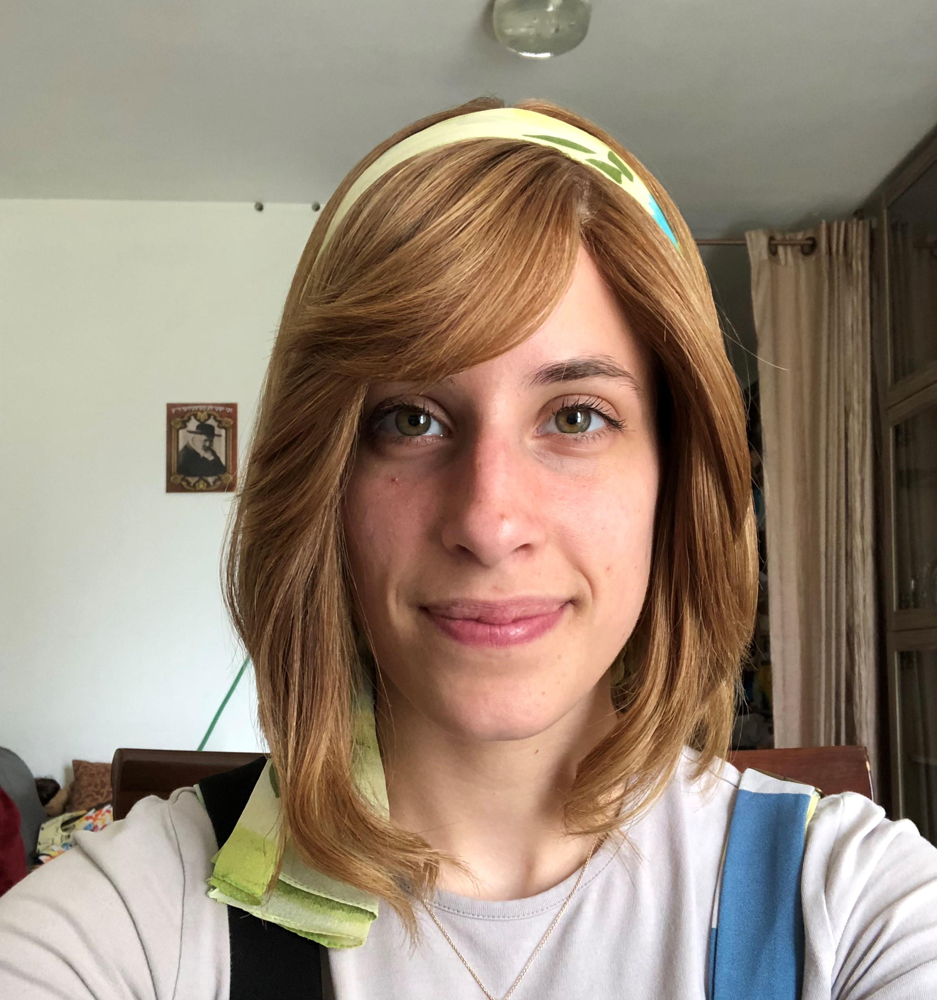

Jennifer Zazon
Front-End Web Developer
Featured Work

Hi there! I'm a front-end web developer constantly looking to expand my horizons. I am a dedicated, resilient, solution-oriented woman.
In my spare hours, I enjoy spending time with my family, cooking, broadening my front-end knowledge, and reading inspirational Hassidic stories.